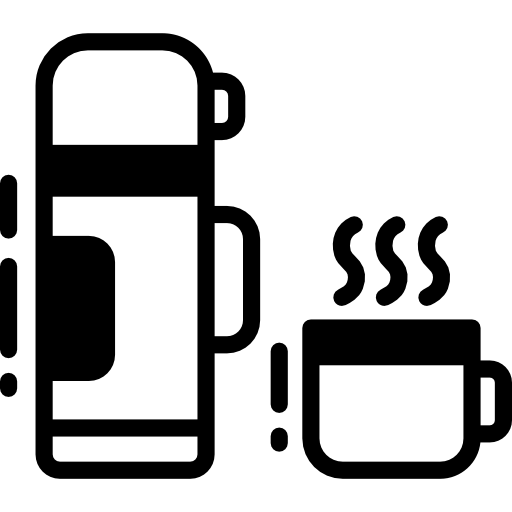

|
|
|
 |
|---|
Primeiramente, o café extraforte é um tipo de café com torra muito escura, praticamente carbonizada, ou seja, queimado mesmo. Por necessidade, a moagem é bem fina para que haja maior rentabilidade e extração de cor. Em outras palavras, essas características são atribuições para maquiar as impurezas utilizadas neste perfil de café. Por exemplo: galhos, café podre, cascas, palha do café, etc… A mistura pode conter um relevante percentual de defeitos e até brincamos que, às vezes, você encontre café no pacote. Até costumamos chamá-lo de café de combate fazendo a analogia que é um enfrentamento, um duelo, para conseguir encarar o amargor. Apesar da baixíssima qualidade, é o café mais comum na mesa dos brasileiros, veja a diferença dele para o café especial:

O café tradicional é aquele que, na colheita, os grãos são colhidos todos juntos (verdes, maduros ou passados). Não existe uma seleção de qualidade entre eles e também são processados dessa forma. Além disso, a torra do café não é tão carbonizada como o extraforte, nem a moagem é tão fina, porém existe o mesmo problema das impurezas resultantes no amargor da bebida. Por tanta impureza, a torra é muito escura e a moagem excessivamente fina. É por isso que a maioria das pessoas não gosta de tomar café sem açúcar.

O café superior ou premium são grãos um pouco mais refinados, pois são cafés verdes ou que se quebraram no caminho. É o menos pior dos dois tipos de cafés que já citamos acima. Porém, assim como o extraforte e o tradicional, encontraremos impurezas. Em outras palavras, aceita 10% de defeitos, torra bem escura e possui sabor amargo. Além disso, os grãos do fruto do café existentes nessa categoria estão verdes ou podres. Você gosta de laranja podre? Gosta de laranja verde? Bom, não é preciso falar muito sobre os sabores que esse tipo de fruto de café traz para a bebida, certo?

Já estamos subindo o nível dessa pirâmide, graças ao pé de café! Cafés Gourmet são considerados uma mistura pura, pois não apresentam defeitos. Em outras palavras, são melhores que os cafés tradicionais, extrafortes e superiores. Nesse sentido, apesar do sabor ser um pouco melhor que os outros, ainda assim, os cafés gourmet não passam por processos de classificação rigorosos como o café especial e não recebem pontuação da SCA. Então, não se surpreenda tanto só porque na embalagem está escrito “café gourmet”, você merece mais que isso!

Ufa! Agora sim! Cafés especiais são frutos maduros e selecionados, livres de impurezas, que passam por um rigoroso processo e que atingem notas sensoriais diferenciadas. São cafés excelentes, podendo ser considerados melhores do mundo e, além de tudo, contribuem para sua saúde. Em outras palavras, os cafés especiais são avaliados com notas acima de 80 pontos pela SCA. Veja os atributos considerados: Fragrância/aroma; Uniformidade; Ausência de defeitos; Doçura, amargor, acidez, corpo e sabor residual (retrogosto); Harmonia.

Da série: o que é bom pode melhorar, sim! Além dos cafés especiais, cafés extraordinários são bebidas avaliadas em notas acima de 90 pontos, descobertos no concurso Cup of Excellence e considerados raridades para o mercado. Ele passou por todo processo de qualidade e conseguiu se diferenciar dentro os melhores, valorizando o preço da saca e trazendo reconhecimento para a fazenda em que foi cultivado.